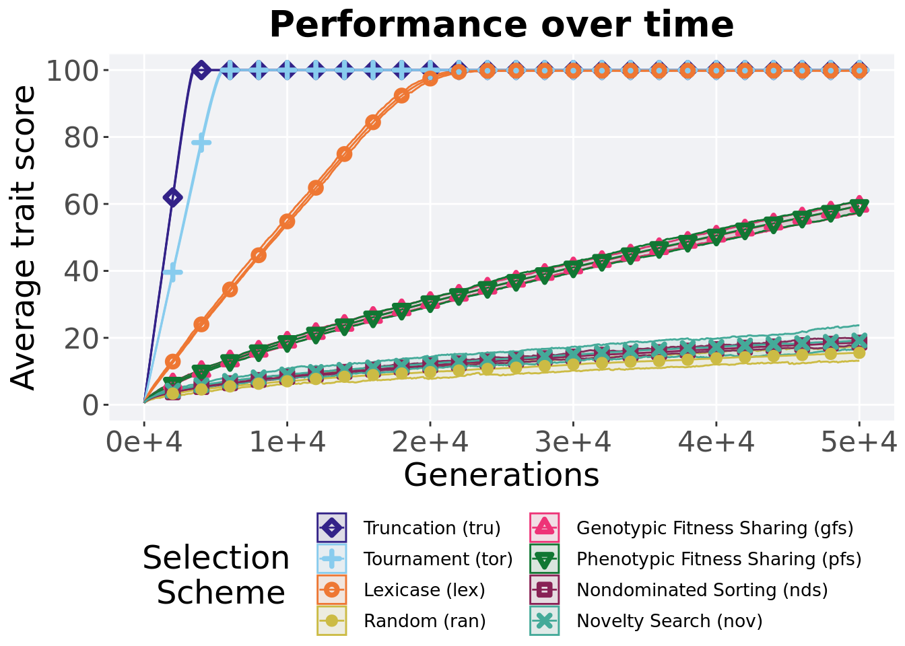
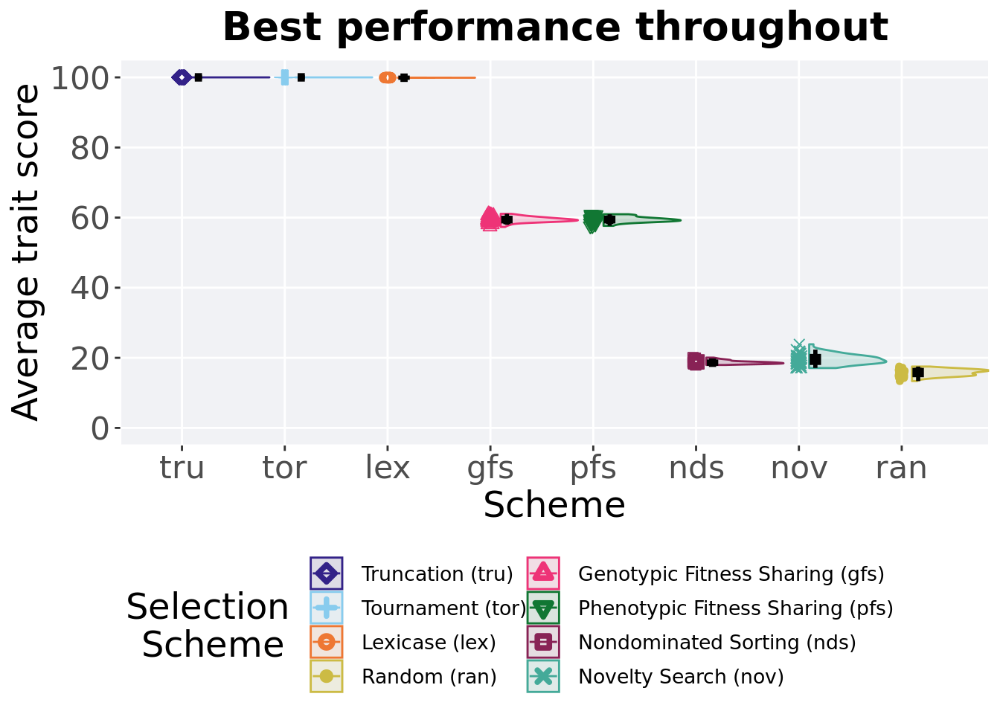
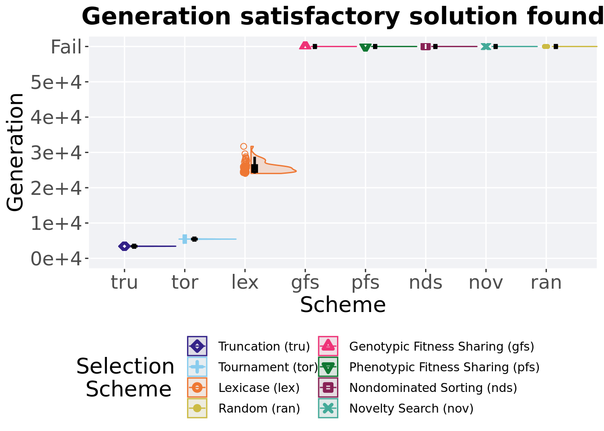

Chapter 2 Exploitation rate results
Here we present the results for best performances found by each selection scheme on the exploitation rate diagnostic. 50 replicates are conducted for each scheme explored.
2.1 Data setup
DIR = paste(DATA_DIR,'EXPLOITATION_RATE/', sep = "", collapse = NULL)
over_time_df <- read.csv(paste(DIR,'over-time.csv', sep = "", collapse = NULL), header = TRUE, stringsAsFactors = FALSE)
over_time_df$scheme <- factor(over_time_df$scheme, levels = NAMES)
best_df <- read.csv(paste(DIR,'best.csv', sep = "", collapse = NULL), header = TRUE, stringsAsFactors = FALSE)
best_df$acro <- factor(best_df$acro, levels = ACRO)
sati_df <- read.csv(paste(DIR,'sol-fnd.csv', sep = "", collapse = NULL), header = TRUE, stringsAsFactors = FALSE)
sati_df$acro <- factor(sati_df$acro, levels = ACRO)2.2 Performance over time
Best performance in a population over time. Data points on the graph is the average performance across 50 replicates every 2000 generations. Shading comes from the best and worse performance across 50 replicates.
lines = over_time_df %>%
group_by(scheme, gen) %>%
dplyr::summarise(
min = min(pop_fit_max) / DIMENSIONALITY,
mean = mean(pop_fit_max) / DIMENSIONALITY,
max = max(pop_fit_max) / DIMENSIONALITY
)## `summarise()` has grouped output by 'scheme'. You can override using the
## `.groups` argument.over_time_plot = ggplot(lines, aes(x=gen, y=mean, group = scheme, fill = scheme, color = scheme, shape = scheme)) +
geom_ribbon(aes(ymin = min, ymax = max), alpha = 0.1) +
geom_line(size = 0.5) +
geom_point(data = filter(lines, gen %% 2000 == 0 & gen != 0), size = 1.5, stroke = 2.0, alpha = 1.0) +
scale_y_continuous(
name="Average trait score",
limits=c(0, 100),
breaks=seq(0,100, 20),
labels=c("0", "20", "40", "60", "80", "100")
) +
scale_x_continuous(
name="Generations",
limits=c(0, 50000),
breaks=c(0, 10000, 20000, 30000, 40000, 50000),
labels=c("0e+4", "1e+4", "2e+4", "3e+4", "4e+4", "5e+4")
) +
scale_shape_manual(values=SHAPE)+
scale_colour_manual(values = cb_palette) +
scale_fill_manual(values = cb_palette) +
ggtitle('Performance over time')+
p_theme + theme(legend.title=element_blank(),legend.text=element_text(size=12)) +
guides(
shape=guide_legend(ncol=2, title.position = "bottom"),
color=guide_legend(ncol=2, title.position = "bottom"),
fill=guide_legend(ncol=2, title.position = "bottom")
)
over_time_plot
2.3 Best performance throughout
Best performance reached throughout 50,000 generations in a population.
plot = filter(best_df, var == 'pop_fit_max') %>%
ggplot(., aes(x = acro, y = val / DIMENSIONALITY, color = acro, fill = acro, shape = acro)) +
geom_flat_violin(position = position_nudge(x = .1, y = 0), scale = 'width', alpha = 0.2, width = 1.5) +
geom_boxplot(color = 'black', width = .07, outlier.shape = NA, alpha = 0.0, size = 1.0, position = position_nudge(x = .16, y = 0)) +
geom_point(position = position_jitter(width = 0.03, height = 0.02), size = 2.0, alpha = 1.0) +
scale_y_continuous(
name="Average trait score",
limits=c(0, 100),
breaks=seq(0,100, 20),
labels=c("0", "20", "40", "60", "80", "100")
) +
scale_x_discrete(
name="Scheme"
)+
scale_shape_manual(values=SHAPE)+
scale_colour_manual(values = cb_palette, ) +
scale_fill_manual(values = cb_palette) +
ggtitle('Best performance throughout')+
p_theme + theme(legend.title=element_blank())
plot_grid(
plot +
theme(legend.position="none"),
legend,
nrow=2,
rel_heights = c(3,1)
)## Warning: Using the `size` aesthetic with geom_polygon was deprecated in ggplot2 3.4.0.
## i Please use the `linewidth` aesthetic instead.
## This warning is displayed once every 8 hours.
## Call `lifecycle::last_lifecycle_warnings()` to see where this warning was
## generated.## Warning: Removed 51 rows containing missing values (`geom_point()`).
2.3.1 Stats
Summary statistics for the best performance.
performance = filter(best_df, var == 'pop_fit_max')
performance$acro = factor(performance$acro, levels = c('tru','tor','lex','gfs','pfs','nov','nds','ran'))
performance %>%
group_by(acro) %>%
dplyr::summarise(
count = n(),
na_cnt = sum(is.na(val)),
min = min(val / DIMENSIONALITY, na.rm = TRUE),
median = median(val / DIMENSIONALITY, na.rm = TRUE),
mean = mean(val / DIMENSIONALITY, na.rm = TRUE),
max = max(val / DIMENSIONALITY, na.rm = TRUE),
IQR = IQR(val / DIMENSIONALITY, na.rm = TRUE)
)## # A tibble: 8 x 8
## acro count na_cnt min median mean max IQR
## <fct> <int> <int> <dbl> <dbl> <dbl> <dbl> <dbl>
## 1 tru 50 0 100 100 100 100 0
## 2 tor 50 0 100 100 100 100 0
## 3 lex 50 0 99.9 99.9 99.9 99.9 0.0154
## 4 gfs 50 0 57.3 59.3 59.4 61.1 0.984
## 5 pfs 50 0 57.6 59.4 59.5 61.0 1.02
## 6 nov 50 0 17.1 19.5 19.5 23.9 1.95
## 7 nds 50 0 18.0 18.6 18.7 20.1 0.603
## 8 ran 50 0 13.4 15.9 15.8 17.5 1.46Kruskal–Wallis test illustrates evidence of statistical differences.
##
## Kruskal-Wallis rank sum test
##
## data: val by acro
## Kruskal-Wallis chi-squared = 385.26, df = 7, p-value < 2.2e-16Results for post-hoc Wilcoxon rank-sum test with a Bonferroni correction.
pairwise.wilcox.test(x = performance$val, g = performance$acro, p.adjust.method = "bonferroni",
paired = FALSE, conf.int = FALSE, alternative = 'l')##
## Pairwise comparisons using Wilcoxon rank sum test with continuity correction
##
## data: performance$val and performance$acro
##
## tru tor lex gfs pfs nov nds
## tor 1.000 - - - - - -
## lex <2e-16 <2e-16 - - - - -
## gfs <2e-16 <2e-16 <2e-16 - - - -
## pfs <2e-16 <2e-16 <2e-16 1.000 - - -
## nov <2e-16 <2e-16 <2e-16 <2e-16 <2e-16 - -
## nds <2e-16 <2e-16 <2e-16 <2e-16 <2e-16 0.018 -
## ran <2e-16 <2e-16 <2e-16 <2e-16 <2e-16 <2e-16 <2e-16
##
## P value adjustment method: bonferroni2.4 Generation satisfactory solution found
First generation a satisfactory solution is found throughout the 50,000 generations.
plot = sati_df %>%
ggplot(., aes(x = acro, y = gen , color = acro, fill = acro, shape = acro)) +
geom_flat_violin(position = position_nudge(x = .1, y = 0), scale = 'width', alpha = 0.2, width = 1.5) +
geom_boxplot(color = 'black', width = .07, outlier.shape = NA, alpha = 0.0, size = 1.0, position = position_nudge(x = .16, y = 0)) +
geom_point(position = position_jitter(width = 0.03, height = 0.02), size = 2.0, alpha = 1.0) +
scale_y_continuous(
name="Generation",
limits=c(0, 60001),
breaks=c(0, 10000, 20000, 30000, 40000, 50000, 60000),
labels=c("0e+4", "1e+4", "2e+4", "3e+4", "4e+4", "5e+4", "Fail")
) +
scale_x_discrete(
name="Scheme"
)+
scale_shape_manual(values=SHAPE)+
scale_colour_manual(values = cb_palette, ) +
scale_fill_manual(values = cb_palette) +
ggtitle('Generation satisfactory solution found')+
p_theme + theme(legend.title=element_blank()) +
guides(
shape=guide_legend(nrow=2, title.position = "bottom"),
color=guide_legend(nrow=2, title.position = "bottom"),
fill=guide_legend(nrow=2, title.position = "bottom")
)
plot_grid(
plot +
theme(legend.position="none"),
legend,
nrow=2,
rel_heights = c(3,1)
)
2.4.1 Stats
Summary statistics for the generation a satisfactory solution is found.
ssf = filter(sati_df, gen <= GENERATIONS)
ssf$acro = factor(ssf$acro, levels = c('tru','tor','lex'))
ssf %>%
group_by(acro) %>%
dplyr::summarise(
count = n(),
na_cnt = sum(is.na(gen)),
min = min(gen, na.rm = TRUE),
median = median(gen, na.rm = TRUE),
mean = mean(gen, na.rm = TRUE),
max = max(gen, na.rm = TRUE),
IQR = IQR(gen, na.rm = TRUE)
)## # A tibble: 3 x 8
## acro count na_cnt min median mean max IQR
## <fct> <int> <int> <int> <dbl> <dbl> <int> <dbl>
## 1 tru 50 0 3392 3422 3423. 3475 26
## 2 tor 50 0 5390 5444. 5447. 5509 43.2
## 3 lex 50 0 24036 25626. 25883. 31709 1739.Kruskal–Wallis test illustrates evidence of statistical differences.
##
## Kruskal-Wallis rank sum test
##
## data: gen by acro
## Kruskal-Wallis chi-squared = 132.46, df = 2, p-value < 2.2e-16Results for post-hoc Wilcoxon rank-sum test with a Bonferroni correction.
pairwise.wilcox.test(x = ssf$gen, g = ssf$acro, p.adjust.method = "bonferroni",
paired = FALSE, conf.int = FALSE, alternative = 'g')##
## Pairwise comparisons using Wilcoxon rank sum test with continuity correction
##
## data: ssf$gen and ssf$acro
##
## tru tor
## tor <2e-16 -
## lex <2e-16 <2e-16
##
## P value adjustment method: bonferroni